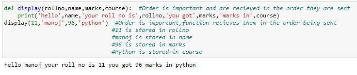
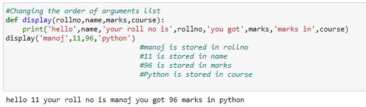
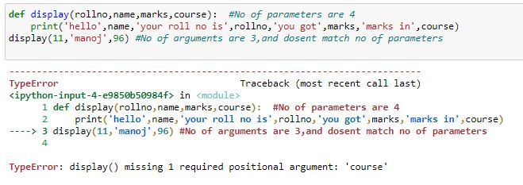
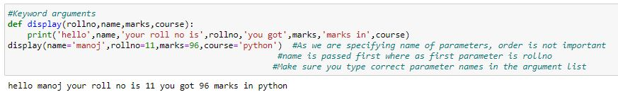
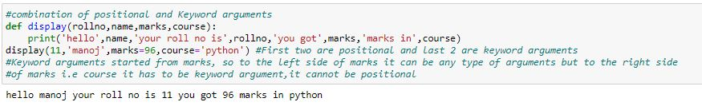
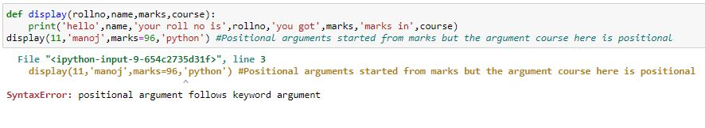
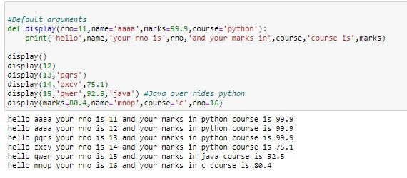
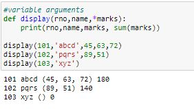
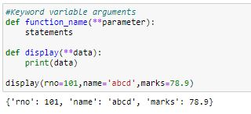

Arguments:
• The data we send during the function call to the function is termed as arguments.
• There are 5 types of arguments.
1)Positional arguments.
2)Keyword arguments.
3)Default arguments.
4)Variable arguments.
5)Keyword variable arguments.
1)Positional arguments:
• The number of arguments we pass must match the number of parameters that function accept.
• The first argument is assigned to first parameter, Second argument to the secon parameter so on.
• The order of the arguments is important.

What happens if we change the order of arguments?

The output achieved does not make any sense!!.
For this reason order is important in positional Arguments.
What happens if we send the no of arguments less or greater than the no of parameters:

We got a traceback, saying that the argument course is missing, so the no of arguments and parameters must match.
2.Keyword arguments:
• In positional arguments, we were unable to give the list of parameters in our own order.
• To overcome that drawback we use keyword arguments.
• In keyword arguments we specify the name of argument while passing it.
• As we are specifying the name of the argument, we can pass them in any order.
• While calling a function, we can use keyword arguments in combination with positional arguments.
• But remember, once we start using keyword arguments, every argument after that will be keyword argument.
• That is to the left of keyword argument, it can be positional/Keyword argument but to the right side of keyword argument,all the arguments must be keyword.
Example of keyword argument:

Using combination of positional and keyword arguments:

What happens if we use positional arguments after keyword arguments?

we got a traceback, saying positional arguments follows keyword arguments.
Default Arguments:
•There are some default values that remain same for all function calls.
•For such values, we can declare them at the top.
•The value declared remains same through out the function calls if the value is not specified during function call.
•If we specify the value, then the new value overrides the default value.
Syntax:
def function_name(para1=value1, para2=value2,para3=value3,....):
statements

Variable Arguments:
• Say, for a student there are 5 subjects and for another there are 6 subjects.
• In this case to send marks to function without no of arguments error we use variable arguments.
Syntax:
def function_name(*parameter):
statements

Keyword variable arguments
•In variable arguments if we want to pass values then it is keyword variable arguments.
